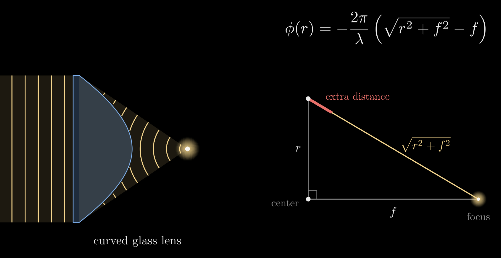
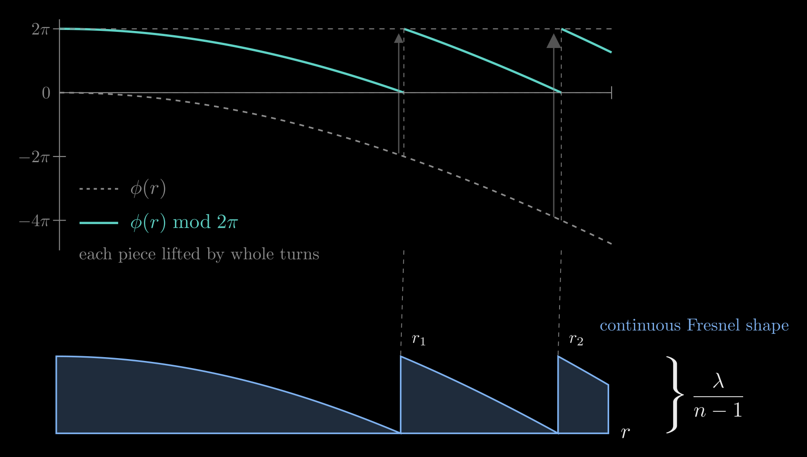
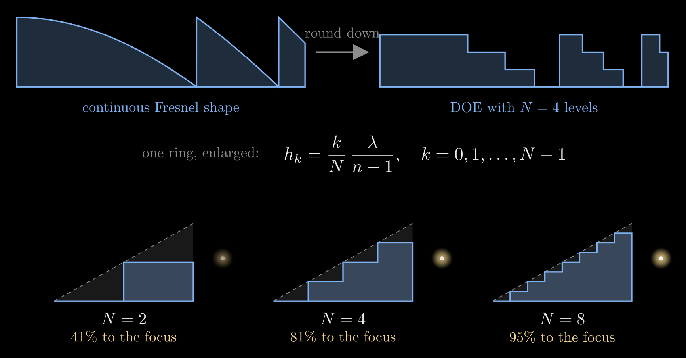
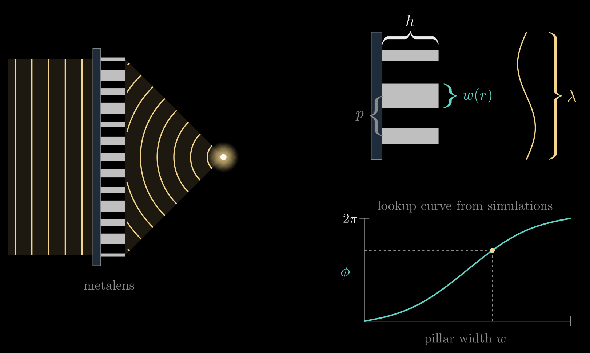
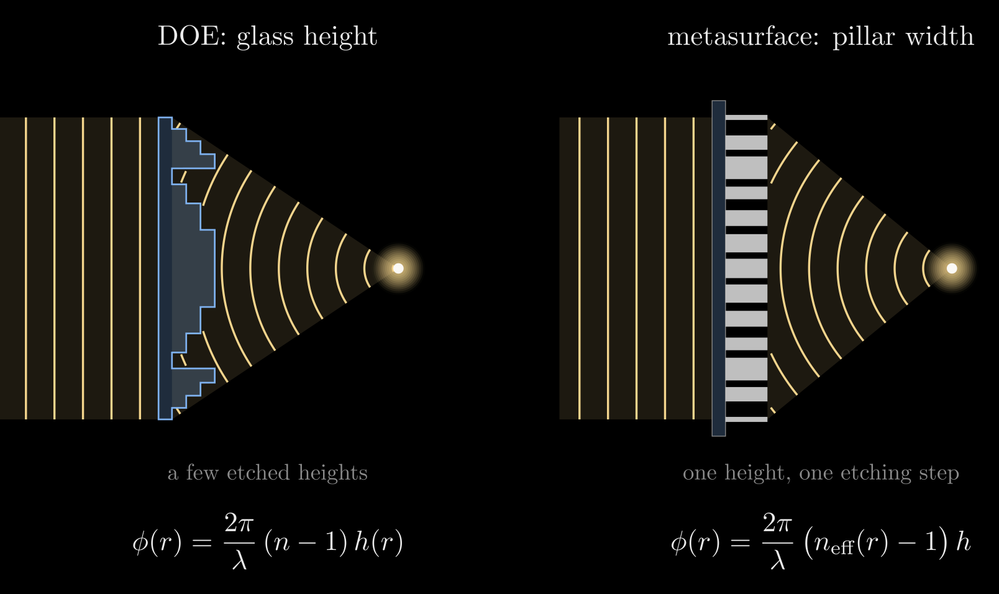

Flat Optics: DOEs and Metasurfaces
Flat optics do the job of a curved lens, or of a prism, grating or beam splitter, with an element that is essentially flat: a patterned layer about a micrometer thick or less on a substrate. There are two main kinds. A diffractive optical element (DOE) sets the phase of light with the height of a glass surface, etched as a few discrete steps. A metasurface sets it with the width of tiny pillars that all share one height. Both rest on the same idea: what a lens really does is add a pattern of phase delays, and a phase delay only matters up to one full turn.
A lens is a phase pattern
Light of wavelength \(\lambda\) (in air) repeats itself every wavelength along its path, so an extra distance \(L\) of travel shifts its phase by \(2\pi L/\lambda\). Picture a clock hand riding on the wave that turns once per wavelength; holding the light back turns its hand back.
A thin optical element changes the light passing through each point by a phase delay only. For a lens with rotational symmetry, write it as \(\phi(r)\): the phase delay the element adds at the distance \(r\) from its center, in radians, so that one full turn is \(2\pi\).
To focus a plane wave that arrives straight on, every part of the wave has to reach the focus in step. Put the focus a distance \(f\) (the focal length) behind the center. Light leaving the element at \(r\) travels \(\sqrt{r^2+f^2}\) to the focus, longer than the central path \(f\) by the extra distance \(\sqrt{r^2+f^2}-f\). Arriving in step means the element's delay plus the travel is the same for every \(r\), \(\phi(r) + \tfrac{2\pi}{\lambda}\sqrt{r^2+f^2} = \text{const}\), and taking \(\phi(0)=0\) at the center gives the lens's phase pattern:
\[\phi(r) = -\frac{2\pi}{\lambda}\left(\sqrt{r^2+f^2}-f\right)\]

Figure 1. A curved glass lens focuses a plane wave because its thick middle delays the center the most. Right: light from a point at distance \(r\) travels \(\sqrt{r^2+f^2}\) to the focus, longer than the central path \(f\) by the extra distance (red), which the phase pattern \(\phi(r)\) cancels.
The minus sign says the element adds less delay where the remaining path is longer: the center is held back relative to the edge by exactly the extra distance the edge light still has to travel. Near the axis, for \(r \ll f\), this becomes the familiar quadratic lens phase \(\phi(r) \approx -\pi r^2/(\lambda f)\). A curved glass lens produces the same pattern with its thickness: it is thickest in the middle, so it delays the center the most.
The pattern is exact only at the design wavelength \(\lambda\). At other wavelengths a flat lens built from it focuses at a different distance, roughly in inverse proportion to the wavelength, which is the main limitation shared by both kinds of flat optics.
Only one turn matters
A delay of \(2\pi\) turns the clock hand once and leaves it pointing the same way: \(e^{i\phi}\) and \(e^{i(\phi+2\pi)}\) describe the same light at the design wavelength. So an element only needs the leftover part of each delay,
\[\phi(r) \bmod 2\pi \in [0, 2\pi)\]
which folds the smooth phase curve of the lens into a sawtooth. Each tooth is a ring-shaped zone. The zone edges sit where the extra distance reaches a whole number \(m\) of wavelengths, \(\sqrt{r_m^2+f^2}-f = m\lambda\), so the radius \(r_m\) of the \(m\)-th zone edge is
\[r_m = \sqrt{2m\lambda f + (m\lambda)^2}, \qquad m = 1, 2, 3, \dots\]
and the zones get narrower toward the edge of the lens. Writing the folded pattern exactly gives a continuous Fresnel shape: smooth ramps, each at most one full turn high.

Figure 2. Top: the lens phase \(\phi(r)\) (dashed) and the same phase folded into one turn, \(\phi(r) \bmod 2\pi\) (teal); each piece is lifted by a whole number of turns, starting at the zone edges \(r_1, r_2\). Bottom: the continuous Fresnel shape, whose glass height follows the folded phase and is at most \(\lambda/(n-1)\) tall.
Diffractive optical elements: phase from height
A DOE is a glass plate of refractive index \(n\) whose surface height \(h(r)\) changes across the plate. Glass slows light by the factor \(n\) compared with air, so crossing a height \(h(r)\) of glass instead of air adds the optical path \((n-1)\,h(r)\), and the phase delay is
\[\phi(r) = \frac{2\pi}{\lambda}\,(n-1)\,h(r)\]
This is the design equation of a DOE: it turns the wanted phase into a height to etch, \(h(r) = \tfrac{\lambda}{2\pi(n-1)}\left[\phi(r) \bmod 2\pi\right]\). A full turn needs a height of only
\[h_{2\pi} = \frac{\lambda}{n-1}\]
about \(1.2\ \mu\text{m}\) for fused silica (\(n \approx 1.46\)) at \(\lambda = 550\ \text{nm}\).
From the continuous shape to discrete heights
Smooth ramps are hard to etch, so a DOE rounds the continuous Fresnel shape to \(N\) discrete heights, the levels
\[h_k = \frac{k}{N}\,\frac{\lambda}{n-1}, \qquad k = 0, 1, \dots, N-1\]
where \(k\) counts the steps. Each level adds \(2\pi/N\) of phase, so every ring becomes a staircase of \(N\) flat-topped steps, and the staircase follows the smooth ramp more closely as \(N\) grows. In scalar diffraction theory, the fraction of the light that reaches the focus (the first diffraction order) is
\[\eta_N = \left(\frac{\sin(\pi/N)}{\pi/N}\right)^2\]
about 41% for \(N=2\), 81% for \(N=4\), 95% for \(N=8\) and 99% for \(N=16\). The rest goes into other diffraction orders and shows up as stray light.

Figure 3. Top: rounding the continuous Fresnel shape down to \(N = 4\) discrete heights gives a DOE. Bottom: one ring enlarged for \(N = 2\), 4 and 8 levels; the staircase follows the smooth ramp more closely as \(N\) grows, and more of the light reaches the focus.
The levels come from repeated lithography: each round patterns a mask and etches one depth, and \(\log_2 N\) rounds with depths \(h_{2\pi}/2, h_{2\pi}/4, \dots\) make \(N\) levels. Four levels take two rounds, eight take three, and every round has to be aligned to the ones before.
Other patterns
Any phase pattern can be written in height the same way. A phase ramp that repeats with a fixed period deflects light like a blazed grating (see Diffraction Grating Formula), a binary pattern splits one beam into several, and the dot projectors of structured-light depth sensors use a DOE to fan one laser beam into a grid of dots.
Metasurfaces: phase from pillar width
A metasurface writes the same folded phase pattern with a forest of tiny pillars, for example titanium dioxide at visible wavelengths, standing on a flat substrate. All pillars have the same height \(h\), written without \(r\) because it does not change, and they sit on a regular grid with spacing \(p\). What changes from pillar to pillar is the width \(w(r)\).
Each pillar guides light like a short waveguide. A wider pillar holds more of the light inside the high-index material, so the light crosses it more slowly. The pillar's effective index \(n_{\text{eff}}(r)\) describes this slowing, and it grows with the width \(w(r)\). Compared with the same height of air, the pillar delays the light by
\[\phi(r) = \frac{2\pi}{\lambda}\,\big(n_{\text{eff}}(r) - 1\big)\,h\]
It is the DOE equation with a different knob: a DOE changes the height \(h(r)\) at a fixed index \(n\), while a metasurface changes the index \(n_{\text{eff}}(r)\) at a fixed height \(h\). To cover a full turn, the narrowest and widest pillars, with effective indices \(n_{\min}\) and \(n_{\max}\), must differ by \(2\pi\), so the pillars must be at least \(h \ge \lambda/(n_{\max}-n_{\min})\) tall; for titanium dioxide at visible wavelengths that is about 600 nm.
The effective-index formula is a guide rather than the design tool: neighboring pillars couple, so in practice the phase delay for each width comes from a full-wave simulation of a periodic array of identical pillars, which gives a lookup curve from width to phase. The design then takes three steps: compute the folded target phase \(\phi(r) \bmod 2\pi\) at every grid site, read the width \(w(r)\) off the lookup curve, and place a pillar of that width. For a focusing lens the widths shrink outward within each zone and jump back to wide at each zone edge.

Figure 4. Left: a metalens focusing a plane wave. Right, top: three pillars enlarged, all of height \(h\), with width \(w(r)\) and spacing \(p\) shorter than the wavelength \(\lambda\). Right, bottom: a lookup curve from simulations turns each wanted phase delay \(\phi\) into a pillar width \(w\).
Two choices make this work:
- The spacing \(p\) is smaller than the wavelength in the substrate, \(p < \lambda/n_{\text{s}}\) for a substrate of index \(n_{\text{s}}\), so the grid of pillars sends no light into extra diffraction orders of its own and the light sees one smooth sheet with the designed phase.
- All pillars have the same height, so the whole pattern is made with a single lithography and etching step, like one layer of a computer chip, while a DOE staircase needs several aligned rounds. The many available widths also give nearly continuous phase levels from that single step.
Pillars need not be round. A rectangular pillar delays light polarized along its long side more than light polarized along its short side, which lets one metasurface treat two polarizations differently; that is the subject of Nano-Optical Polarization Control.
DOE or metasurface

Figure 5. The same lens written two ways: a DOE sets the phase with a few etched glass heights \(h(r)\), a metasurface with pillar widths at one height \(h\), made in a single etching step.
- What sets the phase: a DOE uses the surface height \(h(r)\) at a fixed index \(n\); a metasurface uses the pillar width \(w(r)\), through \(n_{\text{eff}}(r)\), at a fixed height \(h\).
- Phase levels: a DOE has \(N\) discrete heights from \(\log_2 N\) etching rounds; a metasurface has as many levels as the lookup curve offers widths, from one round.
- Feature size: a DOE's steps are usually wider than the wavelength; a metasurface's pillars and spacing are below it, set by the lithography resolution.
- Extra control: a metasurface can also tailor polarization through the shape and rotation of its pillars.
- Shared limit: both are designed for one wavelength and focus other wavelengths at other distances.
Summary
- A lens is a phase pattern, \(\phi(r) = -\tfrac{2\pi}{\lambda}\left(\sqrt{r^2+f^2}-f\right)\), that brings every path to the focus in step.
- Only \(\phi \bmod 2\pi\) matters, so the pattern folds into ring zones that a layer about a micrometer thick can hold.
- A DOE writes the pattern in glass height, \(\phi(r) = \tfrac{2\pi}{\lambda}(n-1)h(r)\), rounded to \(N\) discrete levels \(h_k = \tfrac{k}{N}\tfrac{\lambda}{n-1}\).
- A metasurface writes it in pillar width at a fixed height, \(\phi(r) = \tfrac{2\pi}{\lambda}\big(n_{\text{eff}}(r)-1\big)h\), in a single etching step.